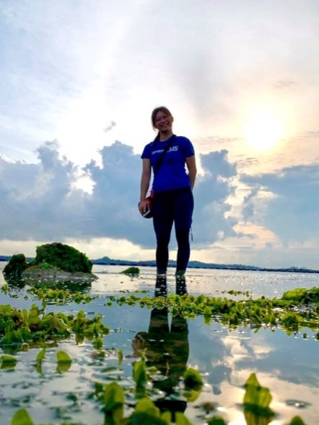

|  | Rachel MARK Yuen YeeResearch Assistant (2022–Present)
Email: rmark.yy(AT)nus.edu.sg |
Research Interests
Coral reef restoration, fish ecology, urban marine ecology, marine conservation
Current Research
Heavy reclamation of coastal spaces around Singapore has led to significant losses in coral reef area around Singapore, an important habitat for various marine life. The current project I am on will assess the different aspects of artificial reefs and how it effects the outcomes of coral reef restoration. We will also explore the effectiveness of public outreach and education efforts. In addition to understanding coral recruitment and survivorship on these artificial reefs, I hope to investigate how other taxa, especially fishes, would utilise the available habitat on such novel structures.
Academic History
B.Sc. (Honours) in Life Sciences (Environmental Biology), National University of Singapore: 2018-2022
Honours project: Feeding preference of parrotfishes and their potential contribution in shaping seawall benthic assemblages in urbanised shorelines
Undergraduate research project: The effect of shelter complexity on fish assemblages associated with seawalls